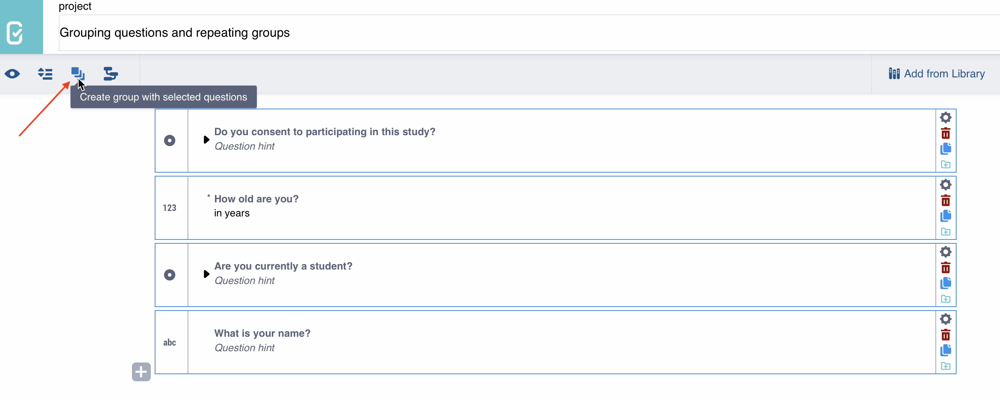
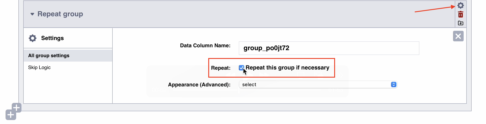

Parcourez la base de connaissances, explorez nos ressources et visitez notre Forum communautaire pour des informations plus détaillées
Dernière mise à jour : 23 avr. 2026
Regrouper des questions permet d’organiser les questions connexes en sections, d’apporter une structure à votre formulaire et de faciliter la navigation. Par exemple, toutes les questions démographiques peuvent être regroupées dans une même section du formulaire.
Les utilisateurs peuvent avoir besoin de regrouper des questions pour diverses raisons :
Structurer le questionnaire : Les questions ayant des thèmes ou des attributs communs peuvent être regroupées dans une même section.
Afficher un ensemble de questions par page : Les questions regroupées peuvent être affichées sur des pages ou des écrans distincts lors de la collecte de données.
Ignorer un groupe de questions : Une logique de saut peut être appliquée à l’ensemble du groupe plutôt qu’à chaque question individuellement.
Créer une série : Les groupes de questions peuvent être répétés, par exemple pour des enquêtes ménages ou le suivi d’indicateurs.
Cet article explique comment :
Créer, ajouter, supprimer et réorganiser des questions dans un groupe depuis l’interface de création de formulaires KoboToolbox (KoboToolbox Formbuilder)
Utiliser des sous-groupes et des groupes répétés
Ajuster les paramètres de groupe tels que les options d’affichage et la logique de saut
Le Formbuilder facilite le regroupement de questions, l’ajout de questions dans des groupes, la suppression de questions d’un groupe et la réorganisation des questions au sein d’un groupe.
Pour créer un groupe de questions, suivez les étapes ci-dessous :
Rédigez un ensemble de questions que vous souhaitez regrouper.
Sélectionnez les questions à l’aide de la touche CTRL (Windows) ou de la touche Commande (Mac).
Cliquez sur Créer un groupe avec les questions sélectionnées dans la barre de menu en haut à gauche.

Votre nouveau groupe apparaîtra dans un encadré ombré, le distinguant des questions standard. Vous pouvez également modifier le libellé du groupe, qui s’affichera en haut du groupe dans le formulaire.
Remarque : Vous pouvez également créer une seule question, la sélectionner, puis cliquer sur Créer un groupe. Vous pourrez ensuite ajouter d'autres questions dans le groupe, comme décrit ci-dessous.
Déplacez votre curseur à l’intérieur du groupe à l’endroit où vous souhaitez ajouter une nouvelle question. Cliquez sur le signe à l’intérieur du groupe pour ajouter une nouvelle question.
Remarque : Si vous cliquez sur le signe situé en dehors du groupe, vous ajouterez une question en dehors du groupe.
Vous pouvez également faire glisser et déposer une question existante dans un groupe de questions.
Pour retirer une question d’un groupe tout en la conservant dans le formulaire, sélectionnez la question et faites-la glisser en dehors du groupe.
Pour supprimer définitivement une question du formulaire, cliquez sur Supprimer la question dans le menu de la question à droite, puis cliquez sur OK.
Vous pouvez réorganiser les questions au sein d’un groupe en sélectionnant la question et en la faisant glisser vers la position souhaitée (vers le haut ou vers le bas).
Si vous n’avez plus besoin d’un groupe de questions, vous pouvez soit dissocier les questions, soit supprimer l’ensemble du groupe. Pour ce faire, cliquez sur le bouton Supprimer dans l’en-tête du groupe.
Une boîte de dialogue apparaîtra vous demandant de confirmer si vous souhaitez dissocier le groupe ou tout supprimer.
Cliquez sur UNGROUP pour supprimer le groupe tout en conservant les questions dans le formulaire.
Cliquez sur DELETE EVERYTHING pour supprimer à la fois le groupe et toutes ses questions.
Remarque : Un groupe de questions peut être créé ou placé à l'intérieur d'un autre groupe. C'est ce qu'on appelle des sous-groupes. Les groupes répétés peuvent également être imbriqués.
Après avoir créé un groupe de questions, vous pouvez personnaliser son comportement et son apparence. Par exemple, vous pouvez afficher toutes les questions du groupe sur le même écran, appliquer une logique de saut à l’ensemble du groupe ou configurer le groupe pour qu’il se répète.
Dans KoboCollect, les questions s’affichent une à la fois par défaut. Dans les formulaires web, toutes les questions apparaissent sur le même écran.
Pour afficher les questions par groupe sur le même écran lors de la collecte de données, cliquez sur l’icône Paramètres à droite du nom du groupe. Ensuite, sous Apparence (avancée), sélectionnez field-list (Afficher toutes les questions de ce groupe sur le même écran).
Remarque : Si vous prévoyez de collecter des données via des formulaires web, vous devrez également activer le thème Pages multiples dans le menu Style du formulaire (Mise en page & Paramètres). Pour plus d'informations sur les styles de formulaires web, consultez l'article Styliser vos formulaires web dans le Formbuilder.
Pour ignorer un groupe de questions, assurez-vous d’avoir au moins une question de contrôle positionnée avant les questions regroupées. Cliquez sur l’icône Paramètres du groupe de questions, puis sélectionnez Branchement conditionnel et configurez les conditions de logique de saut comme vous le feriez pour une question individuelle.
Pour en savoir plus sur l'ajout de conditions de logique de saut, consultez l'article Ajouter une logique de saut dans le Formbuilder.
Un groupe répété permet de répondre plusieurs fois à un ensemble de questions dans un formulaire. Par exemple, dans une enquête ménage, vous pouvez utiliser un groupe répété pour collecter le nom, l’âge, le sexe et le niveau d’instruction de chaque membre du ménage.
Pour créer un groupe de questions :
Créez toutes les questions que vous souhaitez inclure, puis regroupez-les.
Dans les Paramètres du groupe, activez l’option Répéter ce groupe si nécessaire.

Lors de la collecte de données, les enquêteurs pourront saisir des réponses pour ces questions regroupées autant de fois que nécessaire.
Remarque : L'ajout de groupes répétés à votre formulaire crée une structure de données différente par rapport aux variables ou groupes standard. Lorsque vous téléchargez vos données au format .xlsx, vous trouverez un onglet distinct pour chaque groupe répété. Pour plus d'informations sur l'export et l'utilisation des données de groupes répétés, consultez l'article Gestion des données de groupes répétés.
Des paramètres et fonctionnalités supplémentaires pour les groupes répétés sont disponibles via XLSForm, mais pas directement dans le Formbuilder. Ceux-ci comprennent la définition d’un nombre fixe ou dynamique de répétitions, ainsi que l’utilisation des informations issues des groupes répétés ailleurs dans votre formulaire.
Pour plus d'informations sur les paramètres avancés des groupes répétés, consultez l'article Groupes répétés dans XLSForm.
Avez-vous trouvé ce que vous cherchiez ? La traduction était-elle claire ? Manquait-il quelque chose ?
Partagez vos commentaires pour nous aider à améliorer cet article !
KoboToolbox est maintenu par Kobo Inc.